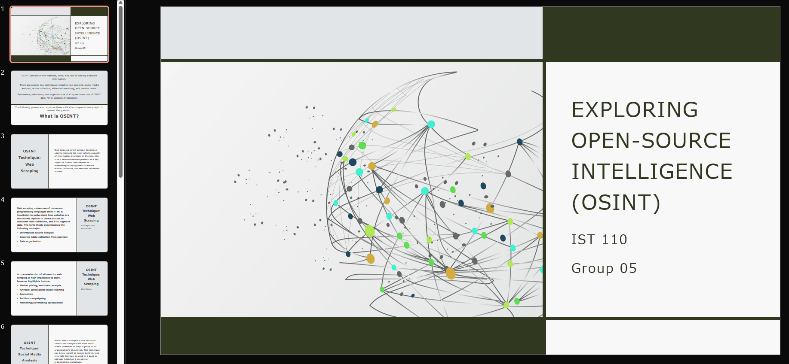
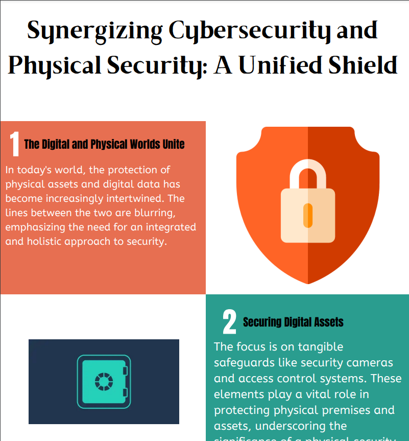

After numerous years toying around with technology both physically and digitally, I decided that the technology sector held the best-fitting opportunities for me to find fun and fulfilling work opportunuities.
This ultimately led me to take the step to become a student pursuing a degree in Information Science and Technology—which is exactly what I now am!
This ultimately led me to take the step to become a student pursuing a degree in Information Science and Technology—which is exactly what I now am!
Atop my more formal educational pursuits, I continue to engage with technology in the building of desktop computers, repairing of small electronics, and personal programming projects from photo organizers to websites just like this one.
Skills Acquired
Collaborative strategies in remote working conditions
Information Technology research strategies in locating and parsing sources
Understanding of human-computer interaction
Data harvesting techniques
Projects
Virtual Information Treasure Hunt
Our team worked to research information detailing how access to copious amounts of information through the internet and web impacts decision-making.
For my part in this research initiative, I sought to specifically see how impaired decision-making in the context of modern e-commerce consequentially has environmental implications.
The findings showed that consumers seem largely unaware of the scale of environmental costs in waste produced and energy expended during shipping that provides them with the lenient return policies most expect.
The findings of my colleagues on the subject of information overload included the following:
The role of product reviews in purchasing decisions
Mental health implications with a particulat eye towards social media
The use of telepresence strategies in increasing consumer trust
OSINT
Our team learned about and developed a presentation into the Open Source Intelligence (OSINT) model.
This began with a collaborative Word document to share in-depth findings before each member worked to distill their findings into a more friendly and presentable PowerPoint presentation.
For my part, I set up the initial document and presentation slides for the team to work on. As for my chosen element of the OSINT model, I
investigated the concepts around web-scraping to understand the technologies, reasons, and strategies used to automate mass data collection on the web.
Other elements researched by my colleagues included:
Social media analysis
Active collection used to exploit network/website vulnerabilities
Advanced searching with modern search engines
Passive recon used to gather data with APIs

A screenshot of a portion of the final PowerPoint presentation.
Security Concept Infographic
Our team worked to investigate modern day technology-adjacent security concepts and develop an infographic to present aimed at informing wider audience.
Our aim was to inform audiences on the importance of a unified approach in physical and cyber-security to achieve true security for individuals and organizations.
For my part, I investigated the cyber-security space with an eye towards appropriate network security measures.

A screenshot of a portion of the presented infographic discussing security concepts.
Outro
These projects have helped to show me a more academic and collaborative approach to research endeavors in the field of information technology.
I am certain this will lead to more rapid, concise, and full understanding of all aspects and disciplines—even those far beyond technology.